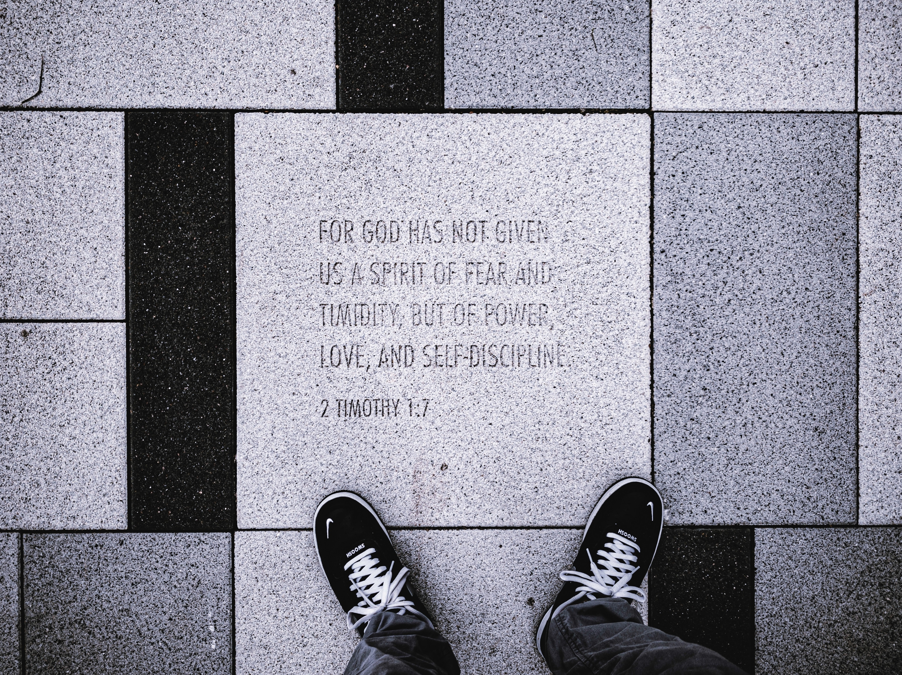

Jesus is the savior. He is King and we are his loyal servants. Believe in Him and we will endure all things. For through Jesus, we feel the love and grace of God. Love Jesus, love God.
Feel God's love.
Ye are my witness, saith the Lord, and my servant whom I have chosen: that ye may know and believe me, and understand that I am he: before me there was no God formed, neither shall there be after me. Isaiah 43:10
Beareth all things, believeth all things, hopeth all things, endureth all things. 1 Corinthians 13:7

For God hath not given us the spirit of fear; but of power, and of love, and of a sound mind. 2 Timothy 1:7
We love him, because he first loved us. 1 John 4:19
Ye are the light of the world. A city that is set on an hill cannot be hid. Neither do men light a candle, and put it under a bushel, but on a candlestick; and it giveth light unto all that are in the house. Let your light so shine before men, that they may see your good works, and glorify your Father which is in heaven. Matthew 5:14-16